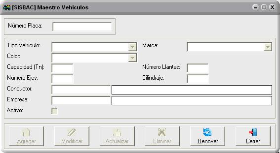
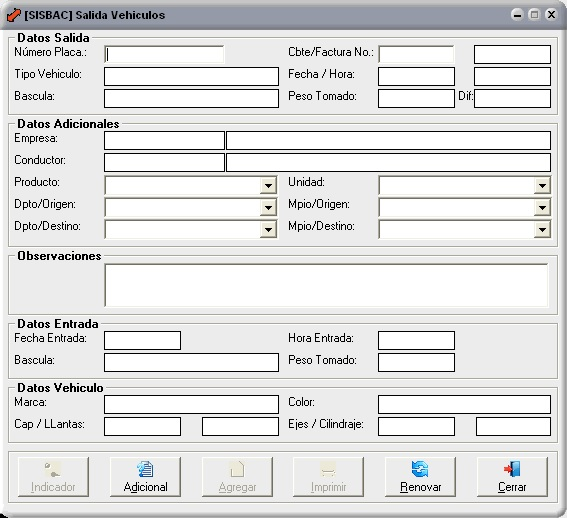

El objetivo fundamental de SISBAC es integrar los procesos que se realizan en la entrada y salida de los vehículos de carga y así mismo llevar un seguimiento por medio de informes que permitan visualizar y controlar los datos sobre el pesaje de cada uno de ellos.
Todas las consultas tienen opción de exportar a Excel, llevar al portapapeles para poder copiarlo a los programas de Microsoft y exportar a archivo plano (csv).
Maestro Basculas

Se configurara las basculas con las que el sistema trabajara, en donde se solicitara los datos para la configuración, se realizara un test al momento de configurar, para verificar que la información está siendo obtenida.
Con esta información el sistema podrá leer o tomar la información de todas las básculas configuradas.
Maestro Terceros
Se crearan todas las personas que interviene en el proceso como son las empresas y conductores, donde se solicitara el documento, tipo de documento, tipo de tercero (Empresa o Conductor), razón social o nombre, dirección, teléfono, móvil, email, departamento y municipio, se podrá activar o desactivar para que el sistema deje o no trabajar con el tercero.
Maestro de Vehículos
Se crearan los vehículos que se les hará los respectivos pesajes, donde se solicitara los datos para crearlo y su respectiva parametrización, adicionalmente se podrá unir el vehículo con la empresa y conductor, para que al momento de solicitar la información del vehículo el sistema sugiera esta información.
Entrada Vehículos
El sistema solicitará los datos para crear el comprobante de entrada. Por medio del indicador se abrirá una ventana en la cual permite según la configuración traer el peso del vehículo, hasta 2 diferentes basculas, completando la información con el peso se tomó. Se podrá adicionar observaciones al momento de capturar la información. Una vez capturada la información y agregada al sistema, se podrá imprimir el formato de entrada, con la información capturada en esta pantalla.
Salida Vehículos
El sistema calculara la diferencia entre la entrada y salida, mostrando este dato en la pantalla, se podrá adicionar observaciones al momento de capturar la información. Una vez capturada la información y agregada al sistema, se podrá imprimir el formato de salida, con la información capturada en esta pantalla.
Pesaje Vehículos

Se completará la información con el número del comprobante que se genera automáticamente, la fecha y hora de entrada, en que bascula y que peso se tomó. Se adicionará las observaciones y una vez capturada la información y agregada al sistema, se podrá imprimir el formato, con la información capturada en esta pantalla.
Consulta Consecutivos
En la consulta se visualizarán los registros de todos los comprobantes que se han utilizado en el sistema, mostrando datos como: comprobante, fecha, hora, placa, tipo vehículo, empresa, conductor y productos.
Esta información tiene filtro para poder encontrar información específica, por medio de campos como consecutivo desde, consecutivo hasta, fecha desde y fecha hasta.
Consulta Movimientos

Esta pantalla de consulta el sistema mostrara todos los registros de vehículos que fueron pesado tanto de entrada como de salida, la información que se visualizara son comprobante.
Consulta Vehículos Transito
La consulta permite ver todas las entradas de vehículos que fueron pesado en la Entrada Vehículos y no se les ha realizado el peso de salida. Esta información tiene filtro para poder encontrar información específica, por medio de campos como empresa, conductor, placa, comprobante, fecha desde y fecha hasta.
Consulta Vehículos

En esta pantalla de consulta, se podrá ver todos los vehículos creados en el sistema, con los datos como la placa, tipo de vehículo, marca, color, capacidad, número de llantas, numero de ejes, cilindraje, empresa, conductor y si está activo o no.
Esta información tiene filtro para poder encontrar información específica, por medio de campos como placa desde, placa hasta y tipo vehículos.
Consulta Terceros
Se podrá ver todos los terceros creados en el sistema, con los datos como documento, tipo de documento, tipo terceros, razón social o nombre, dirección, teléfono, móvil, email, departamento, municipio y si está activo o no.
Impresión

Se podrá imprimir la información capturada en la pantalla de Entrada Vehículos, Salida Vehículos, dando el número del comprobante.
Tambien se realizan por fuera de las pantallas de entrada y salida de vehículo, pero muestran la misma información y están habilitadas según el perfil del usuario, por si se necesita una reimpresión.
Maestros de Tablas

Existe un programa de mantenimiento para cada una de las tablas que intervienen en el sistema, se puede visualizar y ordenar la información.
Maestro de Usuarios

Se crean los usuarios que podrán trabajar con el sistema con datos sus respectivos datos. Permiso Programas, por medio de esta pantalla se autoriza a los usuarios creados en el sistema. Opciones Programas, Una vez que se ha autorizado al usuario que programa puede o no utilizar, si es un programa de mantenimiento, se le podrá dar permisos.
Consulta Auditoria

Se muestra todos los registros de auditoría que se graba, para obtener información de los procesos que los usuarios realizaron dentro del sistema, como la creación, modificación y eliminación en cada uno de los programas que componen el sistema.